Let us see what happens if we introduce a small
change in the terminal time  of the optimal trajectory, i.e., let the optimal control act on a little
longer or a little shorter time interval. We formalize this as follows: for an arbitrary
of the optimal trajectory, i.e., let the optimal control act on a little
longer or a little shorter time interval. We formalize this as follows: for an arbitrary
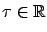
and a small
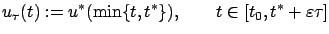
which is illustrated by the thick curves in Figure 4.3 (for the two cases depending on the sign of
We are interested in the value of the
resulting perturbed trajectory  at the new terminal time
at the new terminal time
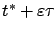
. For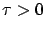
, the first-order Taylor expansion of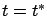
gives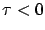
, we have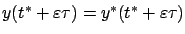
and the first-order Taylor expansion of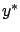
around gives the same result. The vector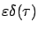
describes the infinitesimal (first-order in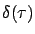
depends linearly on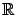
, keeping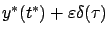
form a line through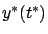
. We denote this line by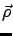
; see Figure 4.4. Every point on corresponds to a control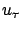
for some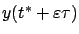
by is valid only in the limit as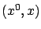
-space only, ignoring the differences in the terminal times; accordingly, the time axis is not included in the figures.